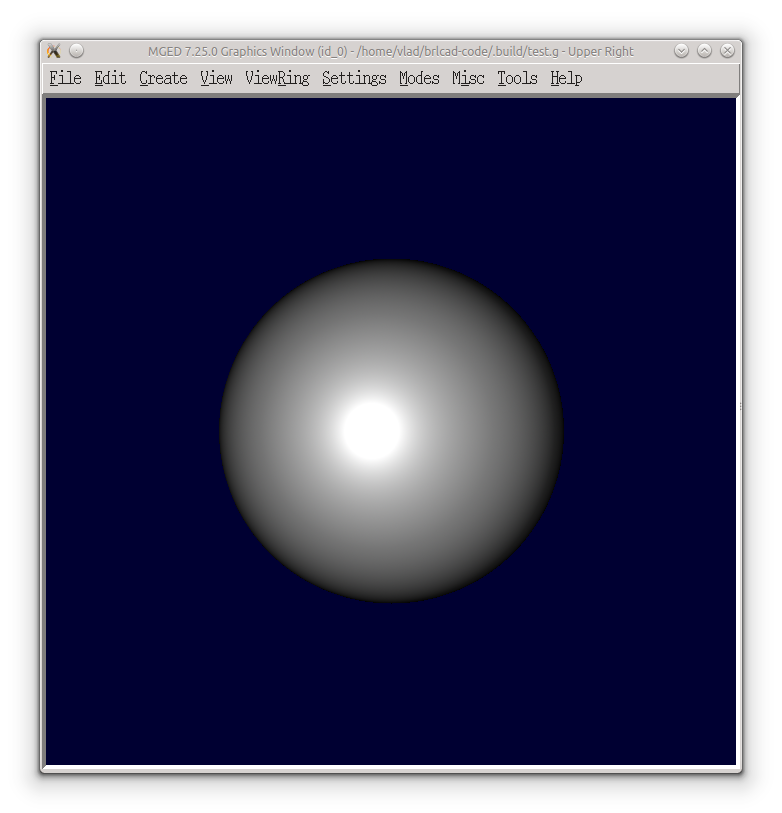
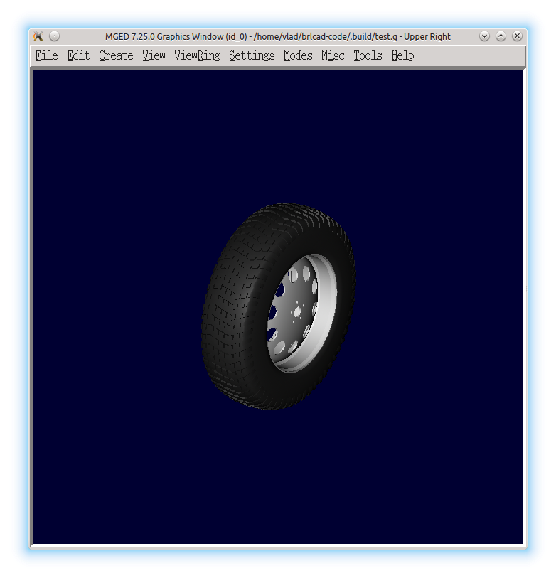
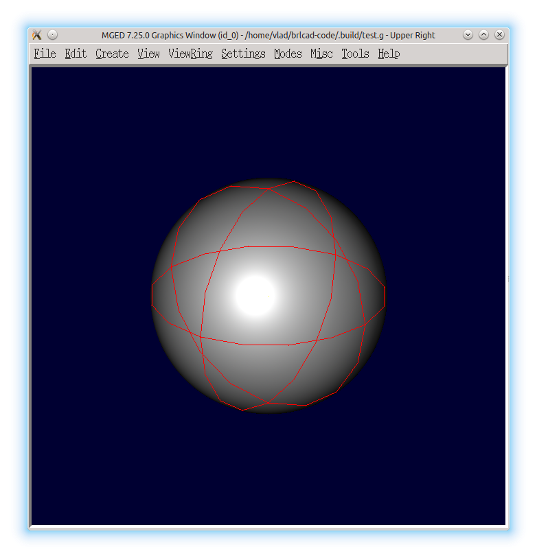
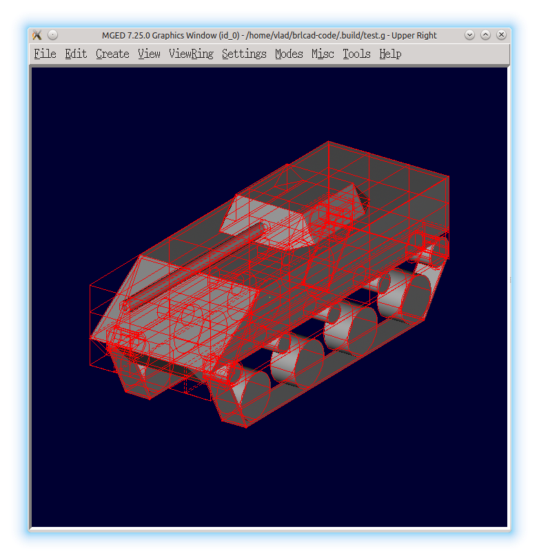
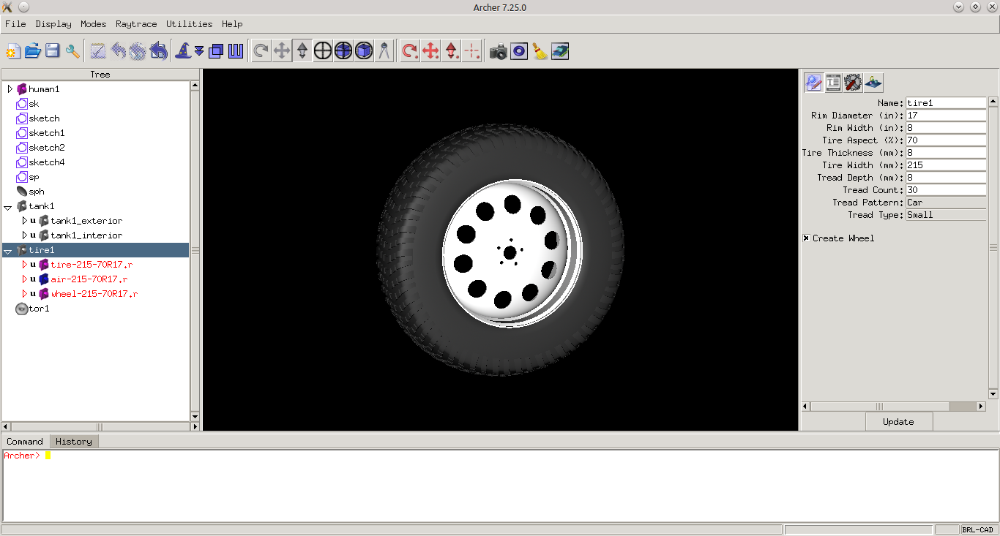
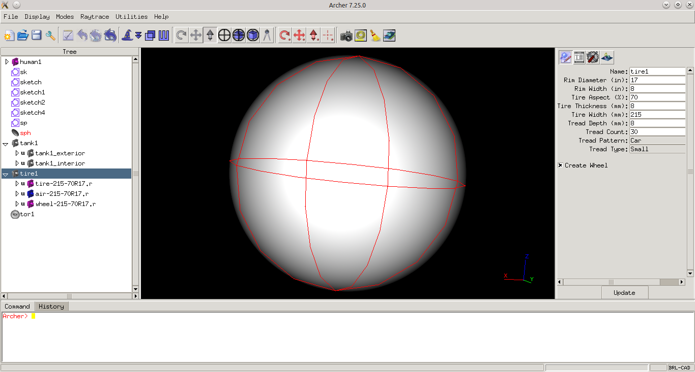

Daily Progress
Project Info
| Project Name | Embedding a framebuffer window |
| Student Name | Bogolin Simion Vlad |
| IRC nick | vladbogo |
| Link to proposal | Proposal |
Milestones
- Implementing a new Qt framebuffer
- Raytracing
- Embedding a framebuffer window
Progress reports
Logs
Community Bonding
- Studied the existing framebuffer implementation
- Researched to see exactly what framebuffer functions are called when using the rt command
Week 1
- Weekly milestone:
- Start working at the "open" function.
- 19 May:
- Started creating a new Qt framebuffer: I started by creating a txt framebuffer that just logs function calls.
- 20 May:
- Mostly a break day
- 21 May - 25 May:
- In this interval I had my final exams
Week 2
- Weekly milestone:
- Make up for the lost time due to exams
- Implement the open/close functions
- 26 May:
- I had my last exam so from now on I will focus on the project.
- Worked a little bit more on the txt framebuffer
- 27 May:
- Worked at attaching the txt framebuffer to the display manager - the txt framebuffer is almost done.
- Studied the existing "open" functions.
- 28 May:
- Attached the qt framebuffer to the display manager.
- Started working at the "open" function.
- 29 May:
- Continued working at the "open" function - it should be done shortly
- 30 May:
- Researched how the raytracer uses the framebuffer and attached the new framebuffer to it.
- 31 May:
- Mostly a break day.
- 1 June:
- Break day.
Week 3
- Weekly milestone:
- Finish implementing open/close and start working at the write function.
- 2 June:
- Continued working at the open function: created an empty window - the function should be done tomorrow.
- 3 June:
- Basically finished the open function - some changes might be needed during the implementation of the other functions.
- 4 June:
- Break day.
- 5 June:
- Researched the write function and the existing framebuffer implementation.
- 6 June:
- Break day.
- 7 June:
- Continued researching the write function and how the content is displayed.
- 8 June:
- More research, but mostly a break day.
- Conclusion:
- Finished implementing the open function and studied existing implementation of the write function
Week 4
- Weekly milestone:
- Have content displayed in the window
- 9 June:
- Solved a issue regarding the cmake build - I forgot to add Qt_INCLUDE_DIRS.
- Created a custom window so that it can be easily added content to it.
- 10 June:
- Released memory so that the qt_close function is done.
- Started working at content displaying. Since this is the main aspect I want to do as much research as possible on how to represent the backing store and how to display its content.
- 11 June:
- Break day.
- 12 June:
- Created and allocated the backing store for the framebuffer.
- Started working at the write function.
- Managed to get some content displayed - even though it's far from done, it is a good start
http://i.imgur.com/kEKv6e9.png
{kind=link}
- 13 June:
- Continued working at the write function.
- 14 June:
- Managed to fix the content display:
http://i.imgur.com/kFaMQk9.png
{kind=link}
- 15 June:
- Mostly a break day.
Week 5
- Weekly milestone:
- Finish the write function.
- 16 June:
- Finished a first version of the write function. Also, tested if more complex models are displayed correctly.
http://i.imgur.com/BqYS7Mr.png
{kind=link}
- 17 June:
- Started working at the open_existing function.
- 18 June:
- Break day.
- 19 June:
- Searched for the best way on how to create the open_existing function. Since until now, the functions were declared in fb.h and all framebuffers use the same header, after adding the Qt includes a lot of conflicts appear so a new method of dealing with the open_existing functions is necessary.
- 20 June:
- Continued studying how to integrate the open_existing function.
- 21 June:
- Break day.
- 22 June:
- Worked at the open_existing function.
Week 6
- Weekly milestone:
- Finish the open_existing function
- 23 June:
- Worked on raytracing from the display manager.
- 24 June:
- Break day.
- 25 June:
- Created the midterm report that can be found here
- 26 June:
- Processed events so that the output is displayed line by line
- Fixed the upside down drawing problem:
http://imgur.com/hOIryrt.png http://imgur.com/h3TLREb.png
{kind=link}
{kind=link}
- 27 June:
- Break day.
- 28 June:
- Started modifying the fbio interface in order to add a generic open_existing entry.
- 29 June:
- Mostly a break day.
Week 7
- Time spent preparing my final project
Week 8
- Weekly milestone:
- Finish modifying the interface in order to use the open_existing function
- 7-8 July:
- Had my final paper presentation. Now I can focus only on GSoC for the rest of the summer.
- 9 July:
- Added a new entry in struct dm so that the framebuffer can be opened from libdm. This is necessary in order to avoid using qt code in mged/dm-qt and also can be used for refactoring dm related code from mged folder.
- Added the _qt_open_existing function in fb.h. This is a temporary solution until a final form of the function is implemented. In the end a new entry will be added in the fbio interface.
- Opened the framebuffer from the display manager, but at the moment there are two different windows.
- 10 July:
- Continued working at the open_existing function. Hopefully it will be done by the end of the week.
- 11 July:
- Struggled more with the embedding of a framebuffer window.
- 12 July:
- More struggle regarding the display of raytraced objects from the display manager.
- 13 July:
- Mostly a break day.
Week 9
- Weekly milestone:
- Finish the embedding of a framebuffer window
- 14 July:
- Worked at the actual embedding of a framebuffer window - still couldn't find a working solution
- 15 July:
- Did a deeper research on how the existing implementation is done. Still couldn't find a way do display content in the embedded window.
- 16 July:
- Break day
- 17 July:
- After a lot of struggle, I have finally found a solution that seems to solve all the problems. Hopefully tomorrow there would be content displayed in the embedded framebuffer window.
- 18 July:
- After using a QPainter to draw the raytraced content in the existing window, content can be displayed so I am on the right track with the embedding. There still are some fixes that need to be done: when the raytracing is done the drawn content disappears and also a few fixes regarding the position of the drawn image are necessary.
- 19 July:
- Tried to solve the problems regarding the embedding so I did a little more research on why the content disappears but with no luck yet.
- 20 July:
- Tried to solve the problem regarding the position of the drawn image.
Week 10
- Weekly milestone:
- Have a working framebuffer.
- 21 July:
- Implemented the configureWindow function.
- Continued trying to solve the problem regarding the position of the drawn image - still no luck.
- Redesigned the write function in order to solve the display problem - there still are some fixes that need to be made.
- 22 July:
- Continued working at the new write function.
- 23 July:
- Solved the display problem - now correct drawings can be made in the embedded framebuffer window:
 
- 24 July:
- Tried to find out why the image disappears after is drawn in the embedded framebuffer window - more research needs to be done since I haven't found the problem.
- 25 July:
- Break day
- 26 July:
- Break day
- 27 July:
- More research regarding the disappearing of the drawings - found the problem (after the raytracing the dm redraws the entire window and the raytraced content erases in this way) and tried to come up with a solution.
Week 11
- 28 July:
- Continued trying to solve the disappearing problem.
- 29 July:
- Solved the disappearing problem. The framebuffer is almost done - there still are some fixes and tests that need to be made.
- 30 July:
- Break day.
- 31 July:
- Mostly a break day.
- 1 August:
- Made some fixes regarding the embedding of a framebuffer window.
- Tested the embedding with different models - found some problems that need some further investigation (at some point the display manager crashes)
 
- 2 August:
- Investigated to see why the display manager sometimes crashes using valgrind.
- Started working at solving the invalid memory access.
- 3 August:
- Mostly a break day.
Week 12
- 4 August:
- Continued working at the invalid memory access problems - now everything works as expected.
- 5 August:
- Implemented the qt_clear function.
- Made the display manager show only non-empty images (after the raytraced content is added to the image)
- 6 August:
- Integrated the fb in archer:
 
- 7 August:
- Did some testing to see that everything works as expected including the underlay, interlay and overlay modes
- 8 August:
- Implemented the qt_read, qt_readrect and qt_writerect functions.
- Integrated mouse events.
- 9 August:
- Mostly a break day
- 10 August:
- Documented about colormaps.
Week 13
- 11 August:
- Started working at qt_wmap and qt_rmap.
- 12 August:
- Implemented the qt_rmap and qt_wmap functions.
- 13 August:
- Mostly a break day.
- 14 August:
- Just some small fixes.
- 15 August:
- Added a simple keyboard event
- Written a project summary which can be found here